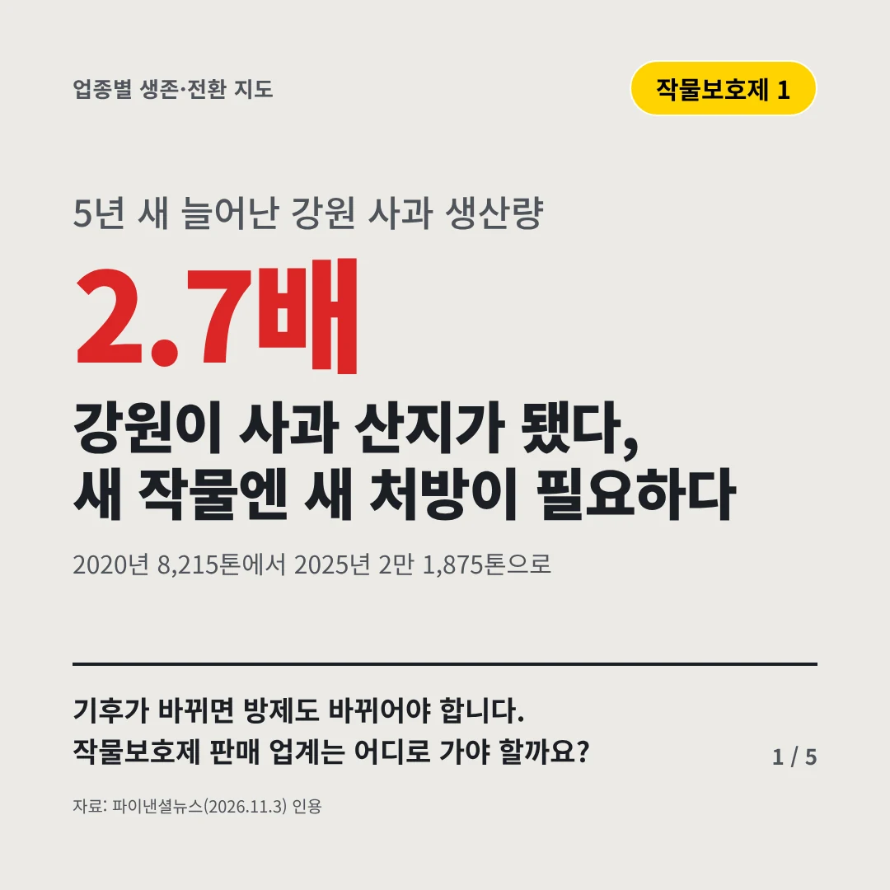
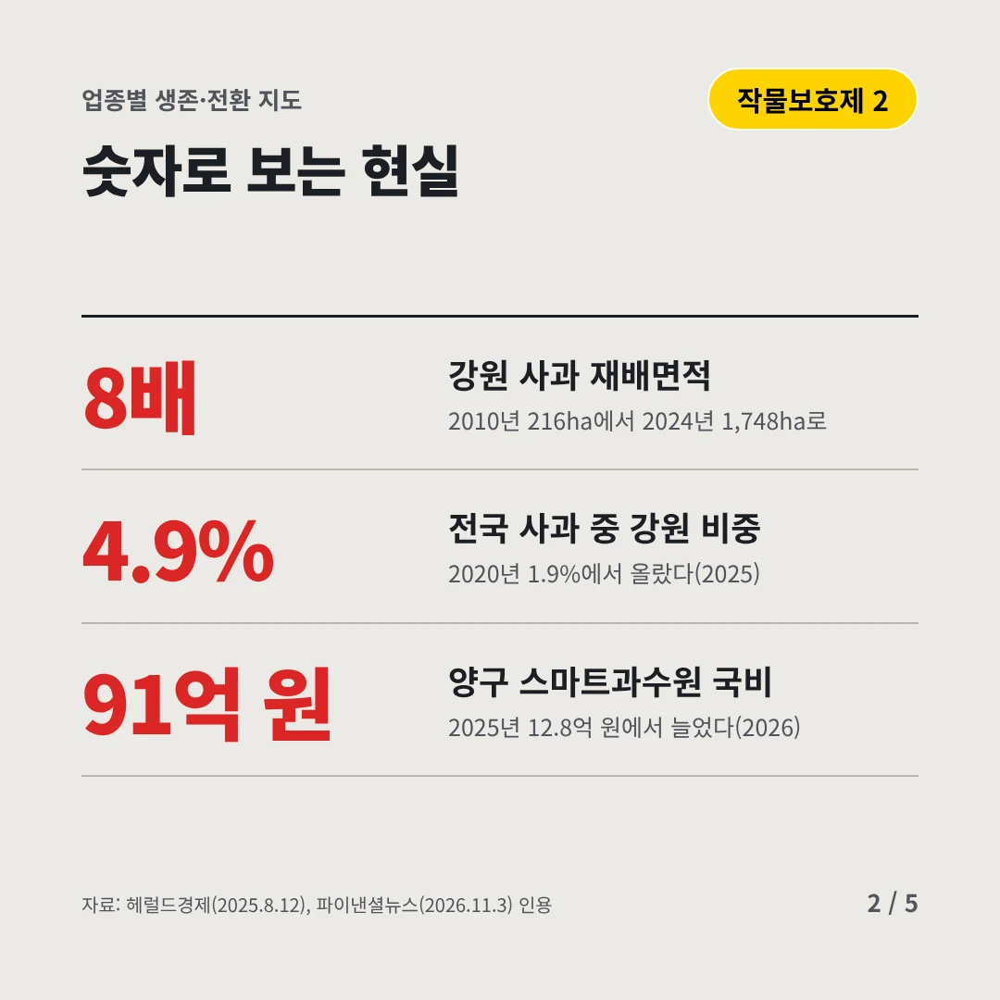
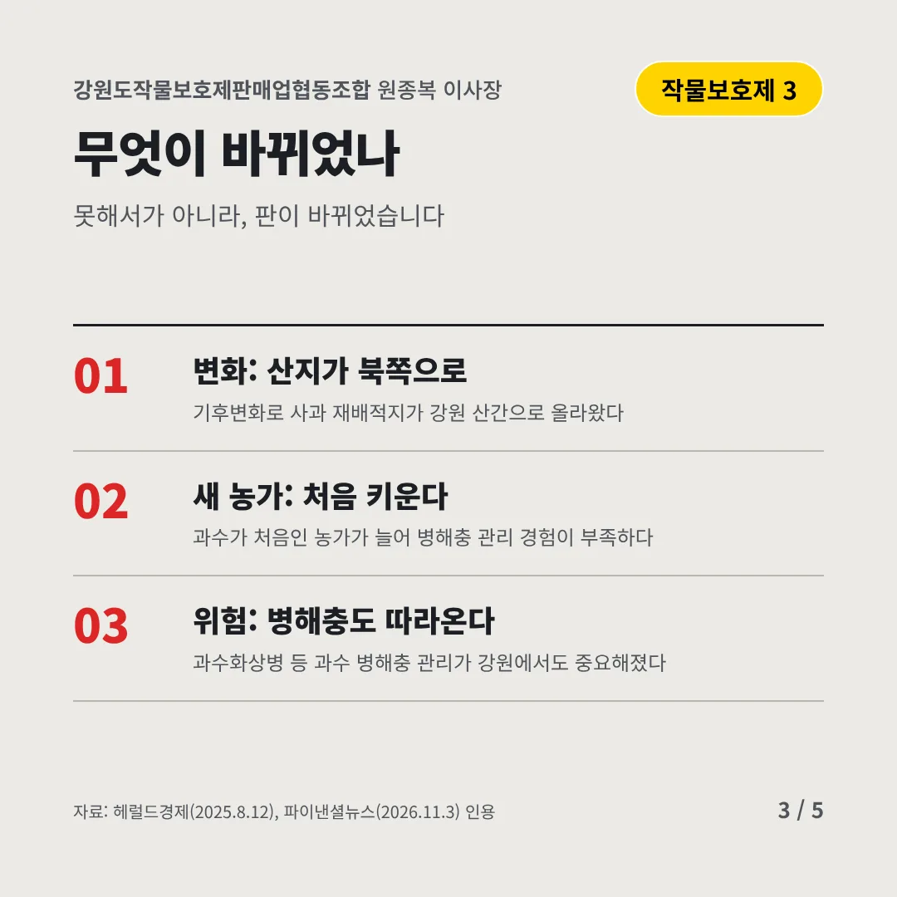
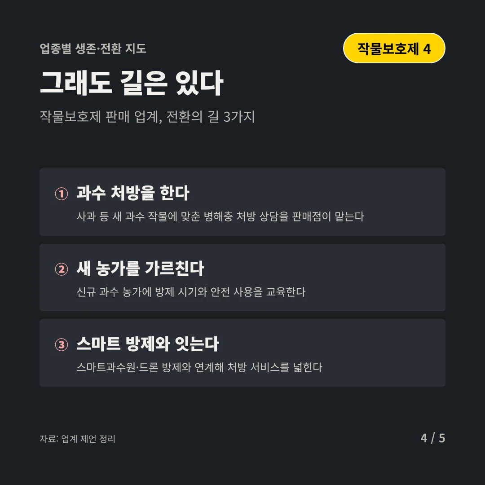
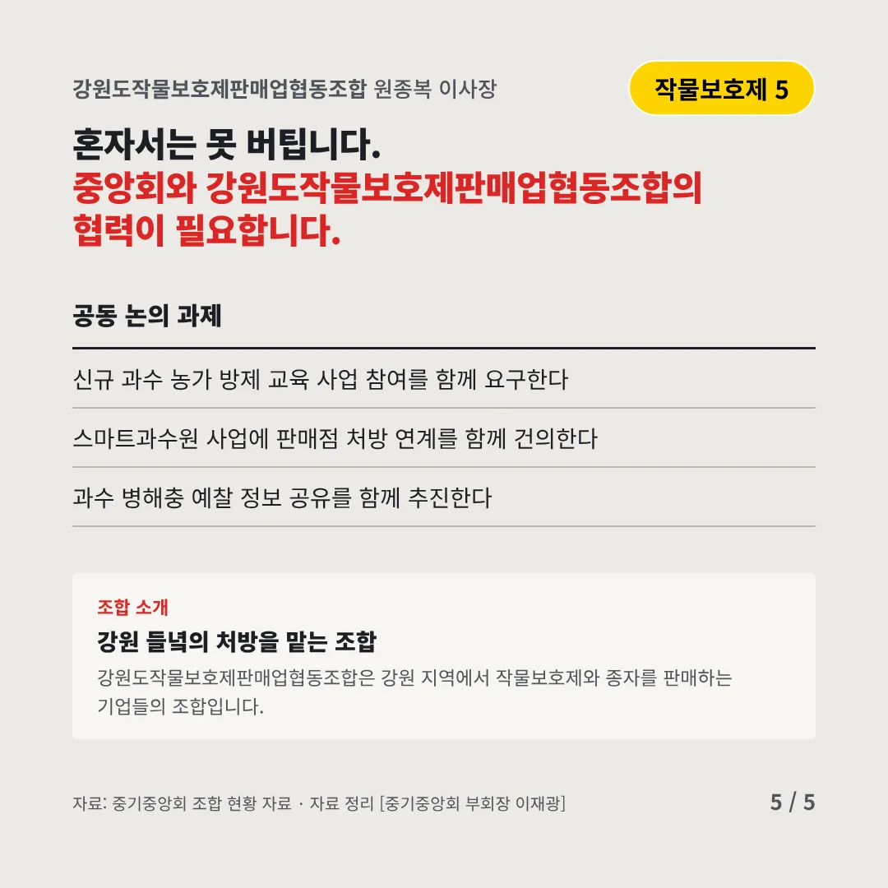
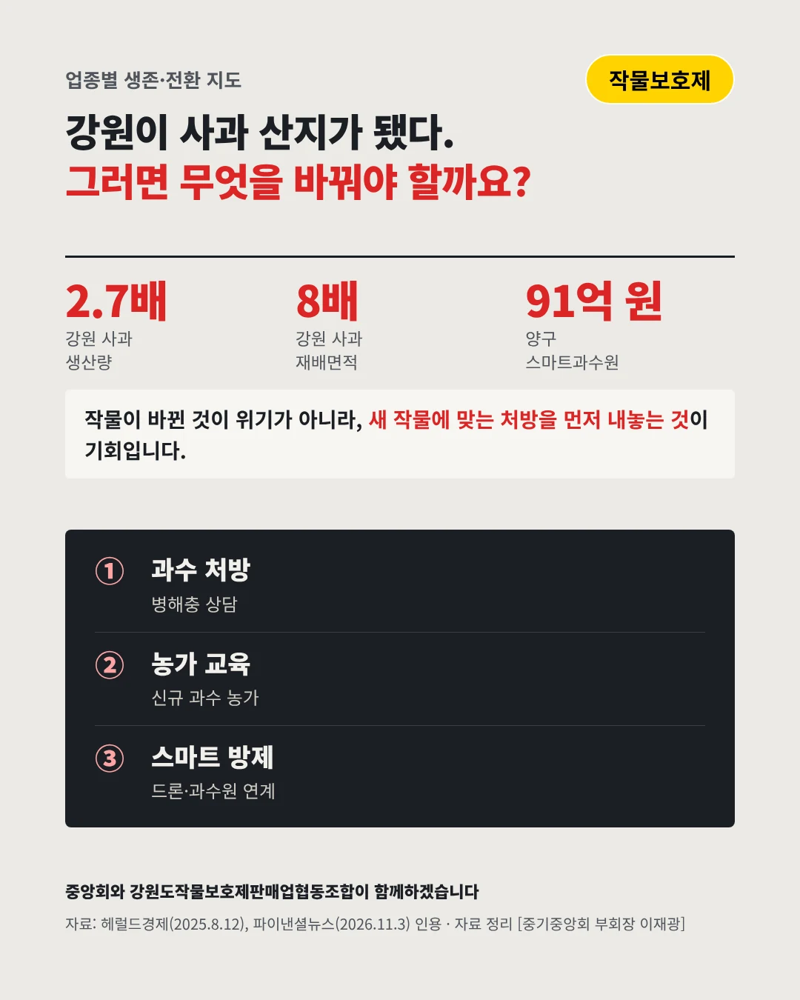

강원도작물보호제판매업협동조합
강원이 사과 산지가 됐다, 새 작물엔 새 처방이 필요하다
2.7배 5년 새 늘어난 강원 사과 생산량






기후가 바뀌면 방제도 바뀌어야 합니다. 작물보호제 판매 업계는 어디로 가야 할까요?
숫자로 보는 현실
- 8배강원 사과 재배면적2010년 216ha에서 2024년 1,748ha로
- 4.9%전국 사과 중 강원 비중2020년 1.9%에서 올랐다(2025)
- 91억 원양구 스마트과수원 국비2025년 12.8억 원에서 늘었다(2026)
무엇이 바뀌었나
- 변화: 산지가 북쪽으로기후변화로 사과 재배적지가 강원 산간으로 올라왔다
- 새 농가: 처음 키운다과수가 처음인 농가가 늘어 병해충 관리 경험이 부족하다
- 위험: 병해충도 따라온다과수화상병 등 과수 병해충 관리가 강원에서도 중요해졌다
그래도 길은 있다
- 과수 처방을 한다사과 등 새 과수 작물에 맞춘 병해충 처방 상담을 판매점이 맡는다
- 새 농가를 가르친다신규 과수 농가에 방제 시기와 안전 사용을 교육한다
- 스마트 방제와 잇는다스마트과수원·드론 방제와 연계해 처방 서비스를 넓힌다
한 장 요약

조합 소개
강원도작물보호제판매업협동조합은 강원 지역에서 작물보호제와 종자를 판매하는 기업들의 조합입니다.
자료: 파이낸셜뉴스(2026.11.3), 헤럴드경제(2025.8.12)